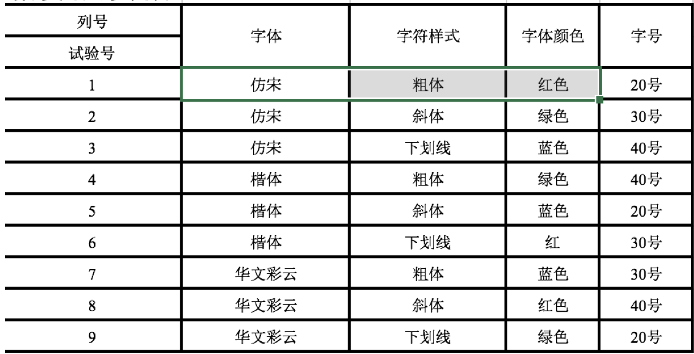

正交法
通过分析我们发现,对于图中的程序而言,我们要设计81条测试用例,那么有没有一种方法能够使用最小的测试过程集合获得最大的测试覆盖率呢?
1. 概述
1.1 定义
正交法,也叫正交实验法或者正交排列法, 就是使用最小的测试过程集合获得最大的测试覆盖率。
“正交实验”是研究多因素、多水平的一种实验方法,它利用正交表来对实验进行设计,通过少数实验代替全面的实验.
在一项实验中,把影响试验结果的量称为试验因素(因子)，简称因素。因素可以理解为试验过程中的自变量，试验结果可以看成因素的函数。在试验过程中，每一个因素可以处于不同的状态或状况，把因素所处的状态或状况，称为因素的水平，简称水平。
1992年AT&T公司,针对某一个软件做了一个回归测试：
在18个周（4个半月）的时间范围内测试1500条测试用例。后来开发时间推迟了，测试时间被压缩了。测试经理想了一个办法，两个人在8个周（2个月）测试1000条测试用例。但是测试经理不能保证该软件就是完全没有问题的。后来他决定用正交表去重新设计一下测试用例，422条测试用例，42个bug。测试完毕后，软件上线了。在上线的两年时间内。凡事被测试到的领域，都没有发现任何问题。后来呢，他从头到尾有总结了一番：有可能只会测试出32条bug。
前后对比：
测试用例的条数少了
测试出来bug的数量多了
1.2 正交表的构成
˙正交表时一种特制的表, 一般记为$$Ln(m^k)$$
- n是表的行数,也就是需要测试组合的次数
- k是表的行数, 表示控件个数(因素的个数,或因子的个数)
- m是每个控件包含的取值个数(各因素的水平数,即各因素的状态数)
例如: $$L9(3^4)$$ 正交表如下

2. 使用正交法设计测试用例
2.1 步骤
- 根据需求把空间即其取值列举出来
- 根据空间和空间的取值个数,选择一个合适的正交表
- 根据控件的个数,选择正交表的次幂,也就是正交表中包含的最大值, 例如,4个控件,选择4次幂
- 根据控件取值个数,选择正交表的底,也就是正交表包含的最大值, 例如, 每个控件有3个取值,底是3
- 把控件及其取值映射到正交表中
- 把控件名字分别映射到正交表的列名位置
- 把正交表中每一列的数字分别用对应的控件取值替代
- 根据正交表,编写测试用例
2.2 案例
实现“字符属性设置”的测试用例编写
(1). 列举因子表
| 字体 | 字符样式 | 字体颜色 | 字号 |
|---|---|---|---|
| 仿宋 | 粗体 | 红色 | 20号 |
| 楷体 | 斜体 | 绿色 | 30号 |
| 华文彩云 | 下划线 | 蓝色 | 40号 |
(2) 确定使用的正交表
| 确定采用的正交表 |
|---|
| $$L9(3^4)$$ |
(3). 把控件及其取值映射到正交表中

(4). 编写测试用例
上图正交表每一行都是一条测试用例,, 此处仅列出2条
| 用例编号 | 输入 | 预期结果 | 实际结果 | 是否是bug |
|---|---|---|---|---|
| UT-设置字符子项测-01 | 字体:仿宋; 字符样式: 粗体; 颜色:红色; 字号:20 | 仿宋、 粗体、 红色、20号 | ||
| UT-设置字符子项测-02 | 字体:仿宋; 字符样式: 粗体; 颜色:红色; 字号:30 | 仿宋、 粗体、 红色、20号 |
3. 小结
3.1 使用场景
- 需求中条件的组合量比较大的时候
- 需求两个两个相互组合的时候
3.2 局限性
正交表的个数有限,一般要求每个控件的取值相等,但是这在实际中很难应用,所以在实际使用时要进行取舍
- 对于控件个数,如果没有,就选择一个接近的
- 对于控制的取值,应该少数服从多数, 有更多空间的取值一样